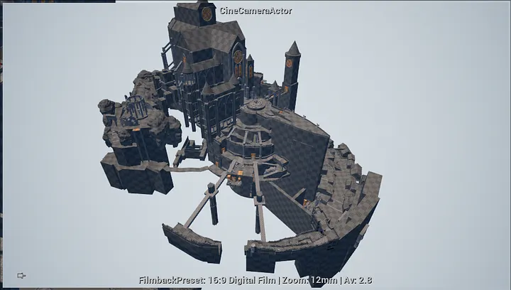
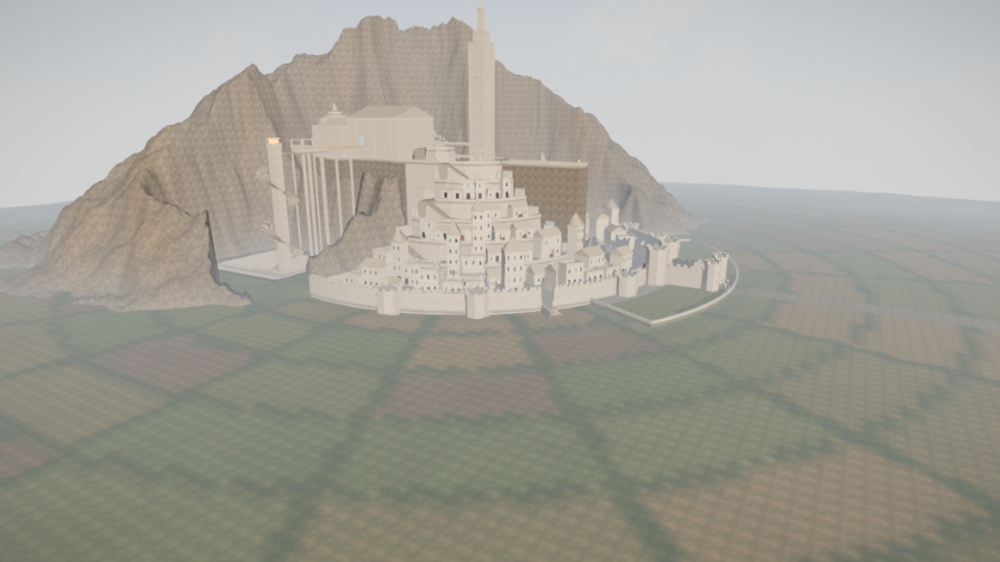

Section through the prow, north ← → south · to scale

Bramasole's level: the source of the district, flow and metrics ideas. The
silhouette follows the Sketchfab Minas Tirith model, which is not stored here (Editorial
licence, never imported).

Current build, on flat plains with the grand gate. Headless inspection render,
not gameplay.
“Finished” means lived-in
Packed row quarters with roofs and windows
Real-looking stone and rock, never checkered blockout
Populated streets
Enterable, furnished homes
Dressed set-piece districts
Judge every change against the reference: a white city in neutral daylight. The
warm grey-tan mountain is the dominant mass, not a backdrop bowl. Pale roofs and
a bastioned curtain.
Critical path
⌂
Gatehouse · City Wall shrineThe Gatewarden explains the climb and the key
1
Zig-zag stairs, alternating endsEach tier is crossed through a gate tunnel in the prow
⚷
Prow gate key · tier 2Opens the barred prow gate on tier 3
4
Up Town → Ultimate PlazaThe Lamplighter (fog) · the Mourner (the Warden)
⌂
Citadel checkpoint · White TreeThe Sage in the court
→
Church Outside Path → Asylum Cathedral
☠
Keeper of the AsylumGuards the switch. Throwing it lifts the fog over the lower city.
↓
Beacon Pathway spiral → Grand StreetA covered road under the plain · the Fearful Knight
☠
The Ash Warden · Glory ColosseumInside the mountain. Phase 2 below half health.
↑
Arena lift → back to the citadel
About 31 enemies, 14 offerings (embers) and 5 NPCs. Shortcuts open from their far side and
persist through death. Shrines refill health and flasks and respawn enemies. You cannot
rest with danger nearby.
Metrics · minimums
Checked on rendered geometry by scripts/auditCapitalMetrics.ts. 1 grid square = 1 m.
Material palette · capitalMaterials.ts
ashlar
plaster
flagstone
sandstone
slate
timber
rock
iron
Accents: ember #ffad58 and interaction cyan
#26c6e9. Kit only: new shapes join the /capital-kit
catalogue and go through the builder.